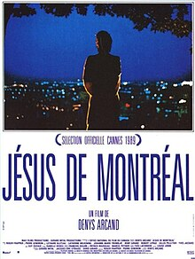
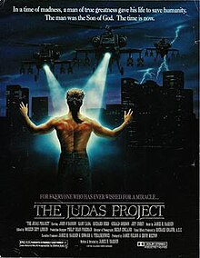

Course: Jesus in the Movies
Lecture #9: Jesus of Montreal (1989)
JESUS OF MONTREAL (1989) -- Denys Arcand

Denys Arcand, a native of Quebec, had distinguished himself for a series of Socio-political films in the 70's and 80's, one of which nominated as the best foreign language Oscar in 1986. Jesus of Montreal was also nominated in 1989 as best foreign language movie. It was given English subtitles in 1990 and released in the United states.
Arcand both wrote and directed this film and claimed he got the idea from an encounter he had with an actor friend. He had a beard and explained he was playing the role of Jesus in a passion play at a Catholic shrine on the mountain overlooking Montreal.
The central character in the film is Daniel Coulombe, played by Lothaire Bluteau, represents an actor in just such a passion play. Coulombe's antagonist in the film becomes Father Leclerc, the priest responsible for the passion play that has been performed on Mount Royal for decades.
Father Leclerc asks Coulombe to rewrite and to restage the traditional passion play, and Coulombe accepts the challenge. He writes a new play and calls together a small company of actors to perform his version of the Jesus Story--two male and two female, in addition to himself.
Conflict arises between the company of actors and the church authorities because of the non-traditional nature of the story they narrated and performed. Conflict also arises between the company and the world --Montreal--as Coulombe their leader increasingly internalizes the values of, and acts out, the role of Jesus.
"Jesus of Montreal" represents another option in the alternative tradition of Jesus films. The ancient story is paralleled to and intersected with a modern story. The Jesus character in the play becomes a Christ figure in the modern world.
Like its predecessors, "Superstar" and "Godspell", this film represents a play within a play. In these musicals the actors no longer lived in the modern world. By contrast, In Arcand's film, the viewers see how the actors relate to and interact with each other within their contemporary social environment. Their involvement draws them closer to each other and sets them, and Christ, over against their culture.
They challenge the worlds of church and state, and of commerce--especially commerce. Very little of contemporary life and popular culture escapes Arcand's satirical commentary which hits the priesthood, advertising, entertainment media, pornography, the court system, psychiatry, natural science, hospitals, arts and even drama.
THE FILM: MONTREAL AND 'THE PASSION ON THE MOUNTAIN'
As with the existing play, Coulombe's version will be staged following the traditional 14 stations of the cross which represent 14 incidents that occurred in the experience of Jesus during his passion and death.
But, unlike the existing play, Coulombe bases his version not just on the gospel texts but on what are claimed to be recent historical and archeological discoveries. Coulombe meets in a parking garage with a member of the theology faculty and receives copies of scholarly articles that allegedly contain new information @ what Jesus was really like historically.
Later we see the pages containing diagrams related to the practice of crucifixion and some 20 minutes of the film showing the actors rehearsing and performing the resulting script. the viewer sees only selected portions, not the entire play.
The story is introduced with the words more characteristic of academic rather than devotional discourse:
The story of the Jewish prophet Yeshu Ben Panthera, whom we all call Jesus. Historians of the day--Tacitus, Suetonius, Pliny, Flavius Josephus--mention him only in passing. What we know was pieced together by his disciples a century later. Disciples lie; they embellish. We don't know where he was born, or his age when he died. Some say 24, others 50. But we know that on April 7 in year 30. . . or April 27 in year 31....or April 3 in year 33... he appeared before the fifth Roman procurator of Judea....Pontius Pilate.
With this cue and the limited cast, Jesus is brought before Pilate by two guards (the women). Jesus is condemned and as it moves to the second station of the cross, we hear more about the limited evidence for the historical Jesus, but emphasizes Jesus Jewishness.
It also explains the name ben Panthera. ..."The Jews claimed Christ was a false prophet, born of fornication. They called him Yeshu ben Panthera "the son of Panthera". We've discovered an order to transfer a soldier from Capernaum in 6 AD. His name was Panthera.
Jesus was also a magician. He was said to have grown up in Egypt, the cradle of magic. His miracles were more popular than his sermons."
The identification of Jesus as magician transforms the enacted story of Jesus into more than just a passion play. Within the stations of the cross the actors enact some of the miracles of Jesus and words, like the sermon on the mount.
When they get to the last station of the cross, i.e., the body of Jesus laid in the tomb, the somber narration begins with these words:
"He'd been long dead. Five years. Perhaps ten. His disciples had scattered, disappointed, bitter and desperate.. . . . ‘
The extensive action and dialogue during the last scene involve an acting-out of the origins of belief in the resurrection. Then the narration begins again:
Slowly people were convinced. He had changed. No one recognized him at first. But they all came to believe he was there. Except Peter and John, the disciples were new: Paul (the Pharisee), Barnaby, Stephen, and foreigners, Greeks and Romans. They were ready to die for their convictions...they were steadfast: Jesus awaited them in his kingdom. They personified hope, .... Mysterious hope that makes life bearable lost in a bewildering universe. You must find your own path to salvation. No one can help you. Look to yourself with humility and courage.
The play concludes when the four members of the cast mount the steps leading out of the underground chamber (tomb) and bid farewell. "Love one another, seeks salvation within yourselves. Peace be with you and your spirit.
With applause, the Jesus figure descends the steps and joins the rest of the cast. Now it is clear: the figure taken to be the resurrected Jesus was not Jesus! In the film, at least in part, belief in the resurrection arose as the result of mistaken identity.
The mistaken identity explanation finds some biblical support in John 20:11-18. In this passage Mary Magdalene meets a man she takes for the gardener and finds out when he speaks it is Jesus. According to this mistaken identity view, Mary was initially correct, it was the gardener. This explanation for the resurrection belief has, on occasion, expressed itself in life-of Jesus literature.
Little wonder that Father Leclerc and his fellow priests were disturbed by and eventually banned, this new version of the play. Daniel Coulombe had used historical findings to "demythologize" the entire Jesus story. –
Show clips thru passion play through Father Leclerc -- 36 min
Jesus of Montreal like The Last Temptation of Christ sharply raises the question of the relationship between the Christ of faith and the Jesus of history.
In Scorsese's film we see Paul the Apostle defending his "gospel" by putting forth the argument that belief in Jesus as the Christ is justified on the basis of how it meets human need, even if that belief rest on a lie.
Here in Jesus of Montreal, Father Leclerc articulates a similar point of view in an encounter with Coulombe in the church. Show clip Leclerc--holding up a discarded walking stick-- says that those who come to church in their brokenness "don't care about the latest archaeological finds in the Middle east. They want to hear that Jesus loves them and awaits them." Show scene 3:30
THE PORTRAYEL: Jesus as Prophet and Apocalyptist
In a scene before Pilate, Jesus makes it clear that his kingdom is not of this earth, and he is not guilty of preaching against Rome. When asked further about his teaching, Jesus says "Greater love hath no man than to offer his Iife for friends." This human love is repeatedly underscored as the center of Jesus' message in the play, in the narration accompanying the play, and elsewhere in the film.
In the other scene giving this portrayal, Jesus asks "who do people say that I am" then "who do you say that I am" after Peter's answer Jesus explicitly tells them not to call him the Christ because, "I am the Son of Man."
This Jesus functions as a social critic. Arcand's Jesus stand over against, and condemns, the values and pretensions of religious leaders and the society around him--ancient and modern. But this Jesus also calls down judgement on the whole modern world. He is also a prophet--but prophet and apocalyticist.
The parallels between the story of Coulombe and the traditional story of Jesus are obvious to those who know the latter. He mirrors the gospel account of calling his disciples (getting his players), cleanses the temple (wrecking a studio that is filming a beer commercial), and the temptation when up in a skyscraper he is confronted with signing with an agent to inherit the "city."
Coulombe's conflict with Father Leclerc parallels the conflict of Jesus with the priestly authorities in Jerusalem. When mouthing the woes, Coulombe looks directly at Father Leclerc and two other priests and says "Do not be called Rabbi, or Reverent Father, or Your Grace, or your Eminence....."
Colombe's story and the Jesus story merge at his final, but unauthorized, performance of Jesus. The priests summon the police to halt the play. A riot breaks out as the spectators’ object and in the midst of it, Colombe suffers what will prove to be a fatal injury. The cross of Jesus becomes the cross of Colombe.
Colombe/Jesus does not die immediately. He is rushed to the hospital, unconscious in an ambulance--with the women of his company. That same evening, he leaves the hospital with the women. Feeling forsaken and feeling the unhappiness of his contemporaries, he begins verbalizing an adaption of the so-called apocalyptic discourse of Mark 13.
All these buildings, these great structures, not a stone will be left some day.. .If anyone says, 'Christ is here," or "there', believe it not. ..The powers of the heavens shall be shaken. You know not when. Watch!
As in the rest of the story, the so called "second coming' has been demythologized. The reference in Mark 13 to a future coming of "the son of man" has here been omitted, sot that the discourse becomes a prophetic condemnation of this urbanized and commercialized world. He is the 'son of man' in the present, not future.
After his speech, he collapses on the subway platform but instead of being taken back to St. Mark's hospital he is taken to a Jewish hospital. Therefore, as a Jesus figure he will die among his own.
Secondly, the speech in Mark 13 as adapted here contains allusions to the apocalyptic Book of Daniel. Coulombe's first name, Daniel, in Hebrew means, "My judge is God." Daniel represents an appropriate name for a prophet whose final declaration relies on Mark 13 and the book of Daniel.
However, beyond the name "Daniel" there seems to be little of God in the film. The film has about it a sense of the godlessness, or the absurdity, of modern life. Given the absence of transcendent meaning in life, seemingly the best one can do is to follow Coulombe/Jesus in creating a small, caring, interdependent community. Even here the film leaves viewers with uncertainty about the future of the community w/o the physical presence of its leader. Show last clip-22 min
THE RESPONSE; A PRIZE WINNER
Arcand's film won the jury prize at the Cannes International film festival in May 1989. The film also received 12 1989 Genie awards, the Canadian counterpart to the Oscars, including the awards for best picture, best director and best actor.
One Canadian viewer writes: "Arcand reinterprets Christianity with agnostic wit. Although the director penetrates to the heart of the Gospel, his hero remains a secular savior. Even for an audience of hardened skeptics, "Jesus" suggests that where religion has failed, art may yet offer salvation."
In the U.S., the film opened in NYC at the Paris theatre in May 1990. The distribution was limited primarily to larger cities, academic communities, and art movie houses. The reviews were generally positive in much of the secular press but less enthusiastic than their counterparts elsewhere.
The "Boston Globe" writer, Jay Carr viewed the films and its message as over simplistic: "Jesus of Montreal" is filled with powerful images and affecting acting but betrays little awareness of the problematic nature of human existence. Morally, it’s all black and white--in short, the very sort of depiction of the stations of the cross it maintains needs enlarging."
The Jesuit magazine "America" considered this film in relation to "Last Temptation" and also "Agnes of God" (1985) -- that had treated Catholicism and Christianity so badly by what he calls their "ironic assault on religion".
Although the critic, Thomas O'Brian, does not ignore the cinematic and theological failings of either "Jesus of Montreal" or "Last Temptation", he does admire both films for what he calls their "intelligent sincerity". The cinematic portrayals of Jesus by Arcand and Scorsese he writes:
.... are valuable precisely because of their lack of dogma: Gone are the cliches of sentimental reverence and the now equally foregone cliches of irony. They at least make people think about eternal issues in ways that hyper-pious films do not encourage or that the contemporary cult of irony forbids.
This explanation by Thomas O'Brian of what he meant by the phrase “intelligent sincerity” serves as an appropriate way to conclude our film-by -film review of the cinematic Jesus.
O'Brian was correctly observed that much of the first hundred years of Jesus in film has reflected a concern for dogma, reverence, and piety. He holds forth the hope that the Jesus films of the next century will challenge viewers to think about, and come to terms with, eternal issues.
NOTE: Text in Highlight is Optional
The Judas Project (1993)

Only Hollywood could make a film about the second-coming of Christ that is a complete and udder waste of time. Fortunately, "The Judas Project" is so horrendously bad - it's hilarious.
Normally, I don't like to give away anything about the plot of a film, but this time I will make an exception. In this film, Jesus has returned as Jesse (John O'Banion), an egomaniacal faith healer who lives on the beach and can summon Industrial Light and Magic from a mountaintop. Some very influential people are interested in Jesse but we never find out exactly who they are or what they really want with him. Meanwhile, Jesse stays on the beach and gathers followers and male disciples including "Pete," a large, one- armed "Grizzly Adams" wannabee, and "Jude," a unbeliever who swears that he is going to make sure that Jesse takes all the power that is offered to him.
After the set-up, this film pretty much re-tells the New Testament. Jesse feeds the masses with 2 loaves of bread and some cheese (that looks like it was stolen from a mousetrap). He heals cripples and blind people. He summons God to a mountaintop and God's thunderous voice-over tells the disciples "THIS IS MY SON. LISTEN TO HIM," (like he's talking to a bunch of petulant children). He tells his disciples that they will deny him. It's as if the scriptwriter looked at the New Testament and realized he had "a movie that writes itself!"
Jesse, after refusing the power offered him by BIG BUSINESS and the Church of America, is crucified and even made to wear a crown of thorns. Gee, I guess the all-powerful religious leader who is apparently the head of the Church of America never read the New Testament. He doesn't realize that this should make Jesse a martyr. God gets so pissed-off when Jesse is crucified that he chases the leader of the Church of America into an old cemetery where he promptly blows the lids off the tombs and picks up some souls - some of whom have apparently been waiting since the Civil War for a ride to heaven.
The ending of this film is a mind-numbing 20-minute music video that includes flashbacks of the film’s most boring sequences as well as supposed flashbacks of scenes that were not shown before. Pete, the big dumb one-armed mountain man disciple gets clubbed by a cop during the funeral procession - which just happens to go by the leader of BIG BUSINESS' house - in slo-mo. Pete begs for forgiveness and Jesse reappears (with the help of Industrial Light and Magic again) and hugs Pete. The syrupy-sweet yet incredibly bland 20-minute Christian music marathon ends and the film is over.
There is no "Judas Project" at all. Jude betrays Jesse (with a kiss, of course) for 30 pieces of silver and then drives recklessly off into the sunset.
There is no plot here at all, only a ham-handed, poorly acted, stupidly written absolute piece-of-shit movie that will leave you rolling in the aisles. It rarely gets this bad. Fans of movie "turkeys" will treasure this film for decades to come… one of 1993's 10 worst movies.